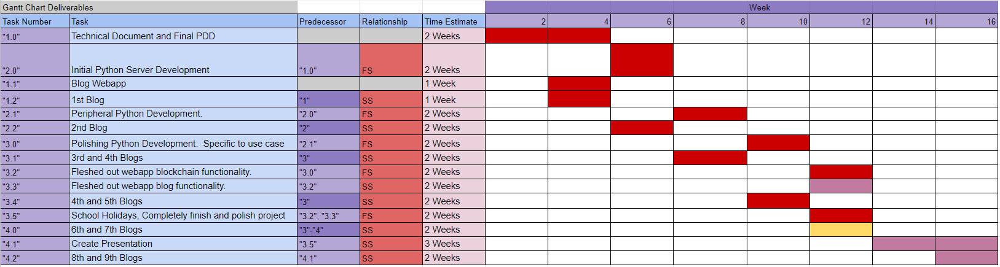
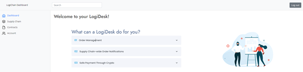
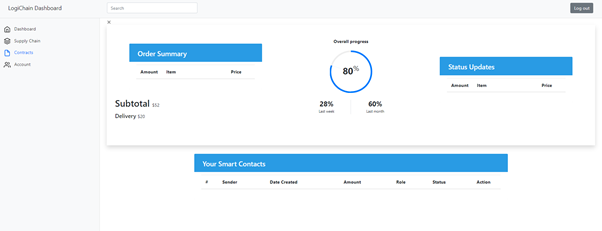

Progress Chart
Welcome to the seventh progress entry of LogiChain!
Important Updates
Since the last progress entry, here are the most pressing updates: Development on the LogiDesk is on the way, I am currently setting up the order management system.
Heres the latest gaant chart updates.

Overview
Order Management
This week has been somewhat unproductive but has built the foundation for our server processes, essentially what we were doing this week was making a skeleton for our order management system. Once the skeleton is fleshed out, we will be able to connect it to our server and we will have a working order system.
It’s important that we finish the order system first since it is the backbone of the entire LogiDesk.
Challenges
Honestly, this week has been very challenging in regard to staying motivated to continue work on web development. I have this experience almost every time I get to the middle of web design where I want to make progress but im far too bored with it, mainly because I only want to do back end operations. This sort of problem does have some silver lining though because in a realistic production environment, I would only be working on either the back or front end, so my suffering will not last too long.
Solution
As far as solutions go, the only real way to fix this problem with motivation would be to frequently switch between tasks before finishing web-dev, but that isn’t something I want to subject myself to, organization wise, and so my solution will be to soldier through and get this done.
Timeline of Progress
4/10/21
From today, we will be working on the LogiDesk web application. I have finished the production of the landing page, designed to give basic information on the LogiDesk.
So now I will be working on the order management page where users can make and track product orders.
8/10/21
I have now completed the basic layout of the order management system, complete with a dropdown for managing orders.
